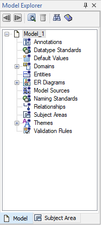

The Model Explorer provides an organized, hierarchical, text‑based view of your data model and its contents. It provides an easy method for creating objects. The Model Explorer lets you create, display, navigate, and modify your model.
The Model Explorer has two panes, Model and Subject Area, as shown in the following illustration:

All the objects in your model are listed in the Model Explorer, but display differently based on the active pane.
When you change an object in the Model Explorer, the graphical view of the model is immediately updated with the same change. For example, if you rename a table in the Model Explorer, the new table name appears in the Diagram Window and the relevant editors. Similarly, if you change an object the diagram or in an editor, you immediately see the change in the Model Explorer.
Just as you can create an entity, a table, or a relationship using the Toolbox, you can create an object in the Model Explorer. To create an object, right-click on any object and click New. You can drag some objects from the Model Explorer onto the Diagram Window to create an object. For example, you can drag a domain onto an attribute or a column.
Using the Model Explorer, you can open the property editor for an object in two ways:
For bulk editing of object properties, you can use the Bulk Editor.
The Model Explorer and the data model are always in sync, regardless of the method you choose to add or edit an object.
You can also move, copy, and delete most objects in the Model Explorer, same as you do in a Diagram window.
After you move, copy, or delete an object, all the instances in the model that reference the object are automatically updated.